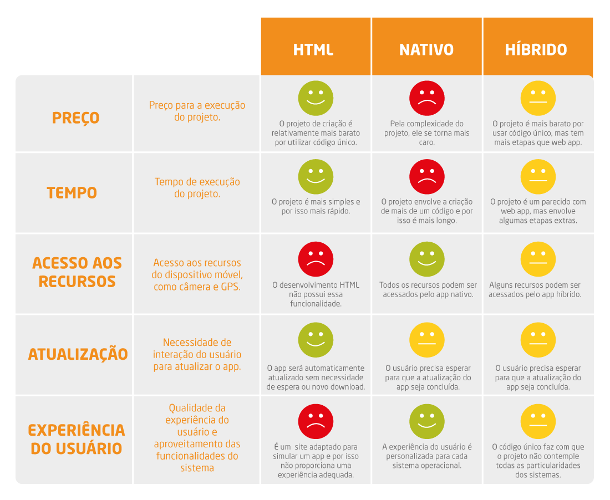

Sobre
Pra começar a falar de aplicação híbrida, vamos focar no Phonegap e Apache cordova que serão explicados mais a fundo posteriormente. Eles são frameworks de desenvolvimento de aplicações para dispositivos mobile multiplataforma. Então, de forma bem direta e resumida, ambas permitem que você desenvolva aplicações utilizando simplesmente HTML5, CSS e JavaScript.
E o ionic não é diferente, ele também é um framework, e é similar a outros existentes no mercado como o jQuery mobile. Através da combinação entre o Ionic e o Cordova/Phonegap é possível criar aplicativos com interface própria para dispositivos móveis de forma híbrida, ou seja, serão aplicações web mobile com acesso ao hardware do dispositivo tornando transparente para o usuário final, no caso, elas podem ser empacotadas e distribuídas nas app stores como uma app nativa.
Mas então, o que seria uma app híbrida e uma app nativa? Uma app híbrida é ter uma única base de código capaz de rodar em diversos sistemas diferentes. Ao invés de dar manutenção para uma base em Java para Android, outra em Objective-C para iOS e mais uma em C# para windows phone, em uma app híbrida só é necessário dar manutenção em única base de código que, por sua vez, poderá ser empacotada e distribuída para todas as plataformas disponíveis, porém, a app híbrida não consegue acessar as funcionalidades do dispositivo de forma direta, sendo necessário o uso de um framework que funcione como intermediário entre o aplicativo e o dispositivo que é onde entra os frameworks que vamos falar.
Sobre o que diz respeito à app nativa, ela é desenvolvida para utilização em uma plataforma específica, como iOS ou Android. Dessa forma, o aplicativo nativo é capaz de explorar todas as potencialidades da plataforma para a qual foi criado, consegue ter acesso a diversos recursos dos aparelhos como GPS, câmera, calendário, lista de contatos, etc, de forma direta.
